The Dabancheng Girl
It was bliss to stay in the cool town of Dabancheng one more day.
The city guide said that the town was very accessible, 90 km away from either Urumqi or Turpan
(Note: Urumqi is also known as Urumchi, or Ürümchi)
Is it very accessible if a place is 90 km from its adjacent cities?
Because of the “accessibility”, Danbancheng had become a quiet place and a nice summer retreat.
A bowel of shaozi noodles was my initial order at my breakfast restaurant.
Then I saw some yummy-looking flatbread on the next table, and ordered that as well.

It was a green onion pancake with a side dish of lightly seasoned julienne cucumber, julienne daikon and sliced onion.
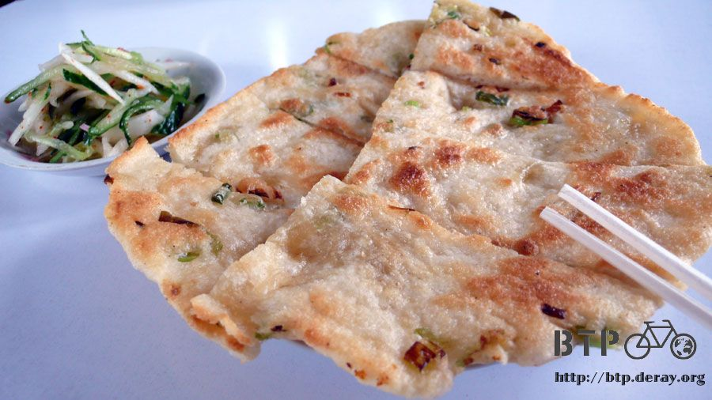
Since the milk tea they offered was not Tibetan yak butter tea, I skipped it.
I reconfirmed my route to Urumqi with the cook in the breakfast restaurant and made sure that I could ride through.
“On the whole, it is not an easy ride. It is not as bad as the famous 『30 km wind gap』 though,
you should be able to make it if you do it in the morning when the wind has not picked up”
The market place had been very busy in the morning and seemed to remain busy for the rest of the day – I would check it out later then.
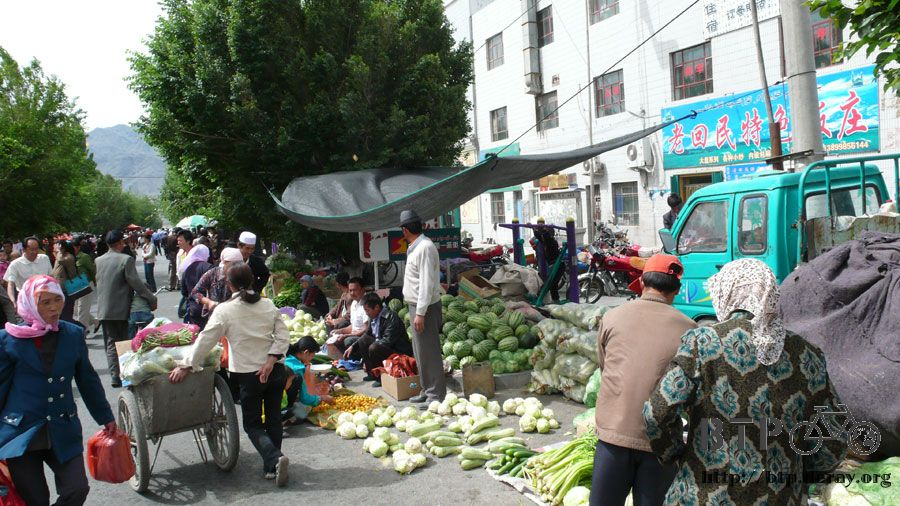
Milk calves were traded in the market. A sold calf was dragged away from the old owner.
Apparently she did not want to leave the old owner.

Then, I went back to the guest house and walked Dido out.
The guest house had only a small signboard outside. However, it had a spacious court yard inside and my room was in the corner.
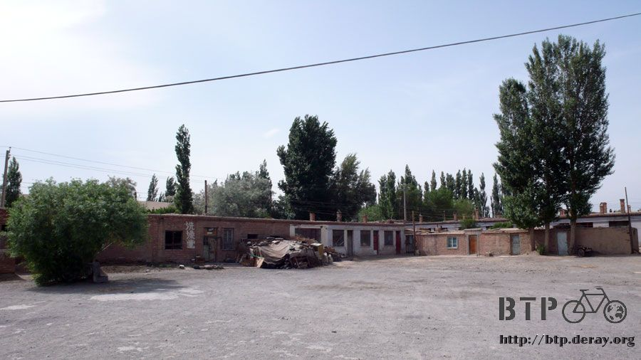
There were many broad bean stores in Dabancheng. Broad beans are a local specialty of Dabancheng.
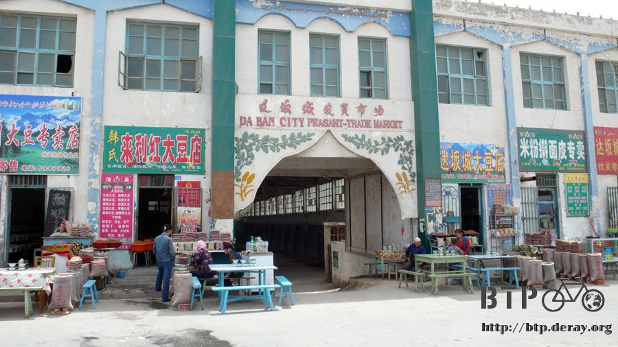
Dabancheng also had vast precious grassland where animals were grazing, and produced a large quantity of milk.
It was very different than the surrounding barren mountains.

Therefore, you can understand that milk tea and yogurt are sold at the stores here.
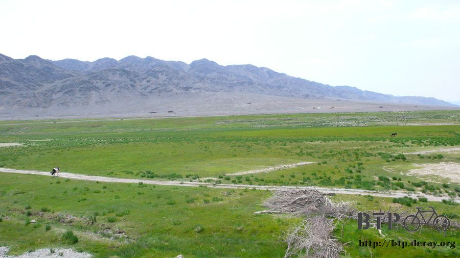
Luckily, today was Friday when the weekly market was held with a variety of vendors. I happily enjoyed the busy thriving market.
At 2:00pm, I started touring Dabancheng on Dido and first rode toward an attraction spot, the old town.
Grassland – long time no see! The rapeseed flowers were waving in the wind.

The same raging wind like yesterday was at my back today and blew me forward.
I did not need to push the pedals but controlled the handlebar and the brake.
The trees bent in the wind. Which mountain did the gale come from?
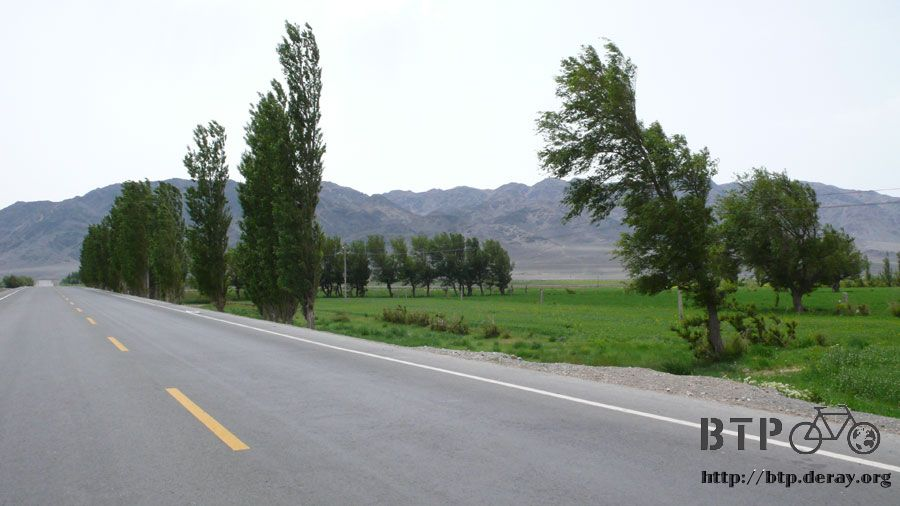
The old town was not far – 10 minutes ride. I just wanted to take a look at the old town at the gate.
Since the entrance fee was inexpensive and bicycles were allowed, I paid for the ticket and took the tour.


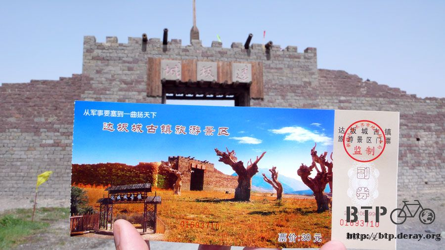
Dabancheng was built a thousand years ago dating back to the Tang dynasty.
Everything was either damaged during the war, or lost with the passing of time, except for its city wall.

This old town was actually the carefully renovated White Water town located outside of Dabancheng.
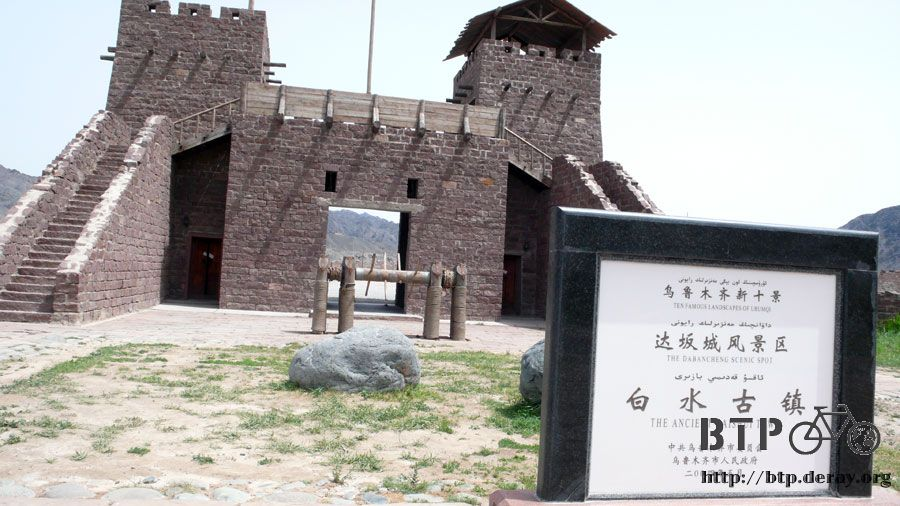
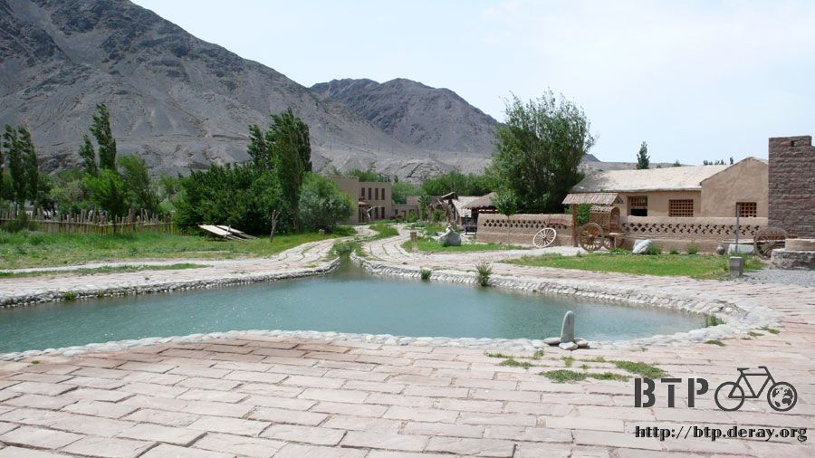
Only a few houses were in the little old town, but each one had its own character, with souvenirs and local specialties for sale.
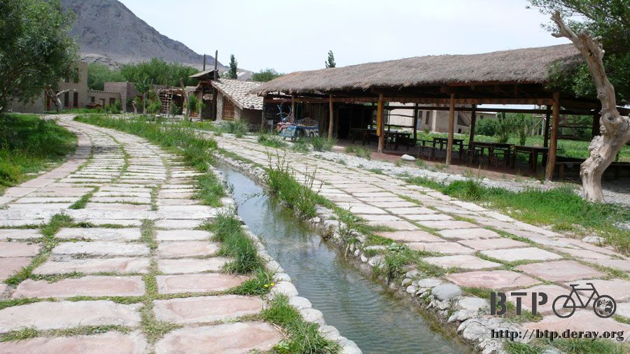
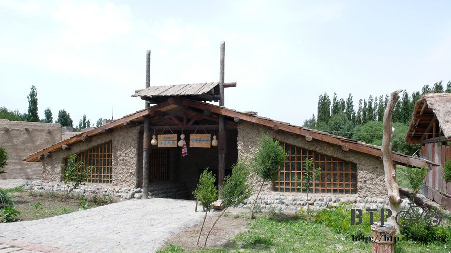
As the matter of fact, I never heard the famous song “The Dabancheng Girl” before.
Even with the lyrics and score in front of me, I did not know how to sing it.
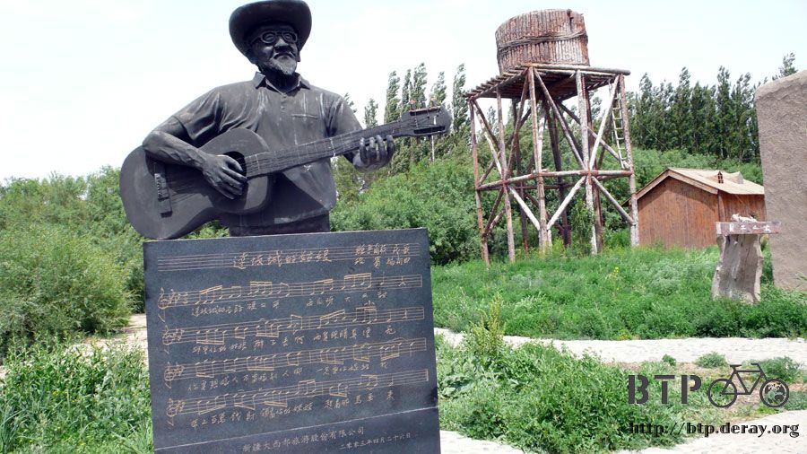
While I was trying to sing the song, the winery owner invited me over.
I had a glass of red wine which had very low alcohol content and tasted like grape juice – not bad though.
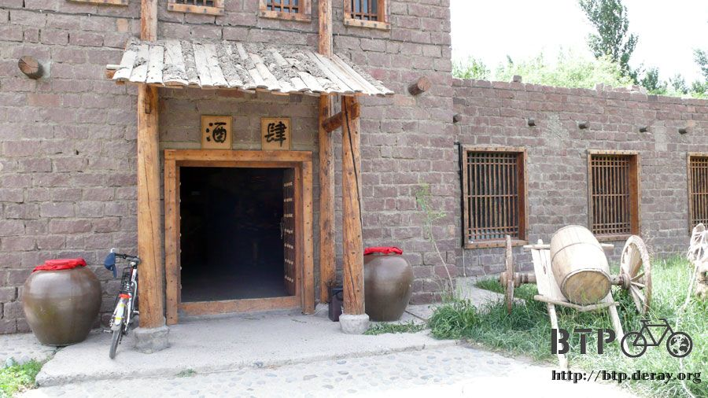
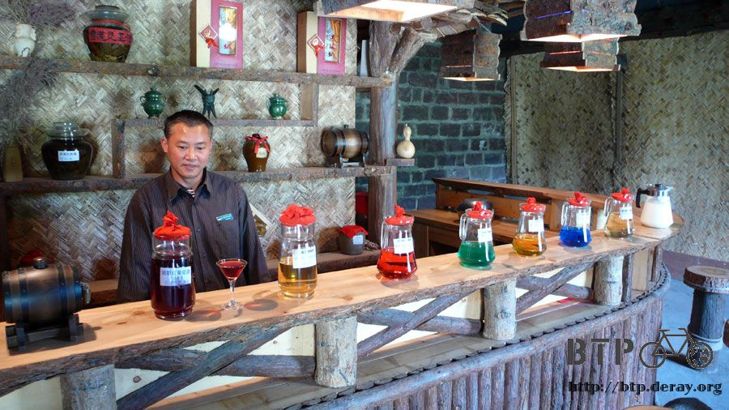
By the way, I asked the owner to play “The Dabancheng Girl” for me.
Mr. Wang Luobin collected and revised this folk song of Uygur. Here are the lyrics:
“Dabancheng’s stone roads are hard and smooth
Water melons are big and sweet
The girls live there having long braids and beautiful eyes.
If you want to get married, don’t marry other man.
You must marry me
Bring your million dollar dowry and take your young sister with you
Come to me in a carriage”
Accompanied by guitar, this is a happy folk song.
It sounded funny the first time I listened to it, but it lightened my heart after several replays.
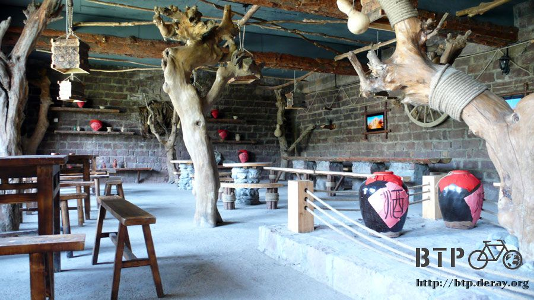
Dido was left with the winery owner and the staff of the Wang Luobin memorial hall
as I was browsing through the memorial hall to learn who Wang Luobin was.
Thanks to him who revised so many Xinjiang folk songs, we are left with lots of good songs including the famous “The Dabancheng Girl”.

When I told the winery owner that I never heard the song and asked him to play it for me,
he was shocked – how could it be possible not to have heard it as a Chinese?
The lyrics say water melons are big and sweet in Dabancheng, Dabancheng does not grow them.
Broad beans are the major agricultural product here.
They are processed and made into snacks with various flavors such as garlic, spicy, strawberry or fruit.

The old town has a broad bean shop as well.
Just like Harry Potter’s Bertie Bott’s Every Flavor Beans, there were various flavored broad beans sold here and there was one named “strange flavor”.
I asked the lady owner if it was for real before sampling it with my eyes closed.
It tasted like BBQ lamb kabob and the flavor was not strange at all.
I bought a small bag of fruit flavored beans - crispy, tasty and nutritious.
After thousands of years, only the city wall ruin was left.
The ruin was not protected by anything, but enclosed with rope.
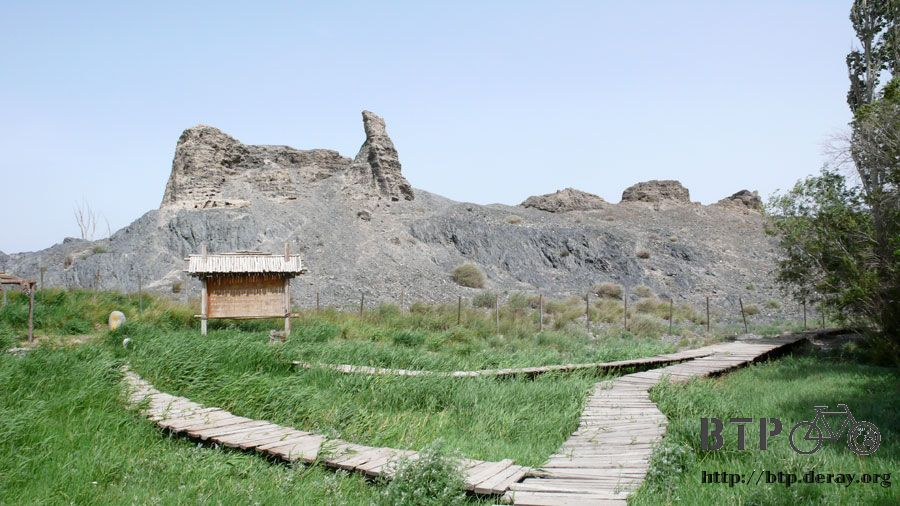
Perhaps the town would be gone forever in a thousand years,
or some unbelievable technology would rebuild the town. Who knows?
There were a few real tents, plank wood trails with weeds sticking out from the joints and a spring named “bringing baby”.

The cold, gusty wind ruffled my hair. My hair had grown long during the trip and was getting harder to deal with.
I would get a buzz cut after getting back to Dabancheng.

I dropped in the hair saloon next door to my guest house and had the hairdresser cut my hair without asking the price.
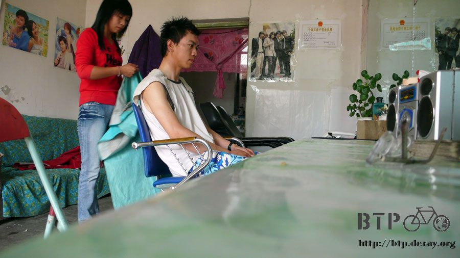
I had a hair wash first, then I was asked about hairstyle.
“buzz cut, but don’t shave me bald”
10 minutes later, my haircut was done. I felt fresh and delightful when touching the short hair.

During the haircut, I chatted with the local hairdresser. It turned out that the locals do not eat broad beans.
Then, who would eat them?
It turns out that the broad beans were not sold for the locals, but for whom then?
“For You!” said the hairdresser with laugh on her face.
She said that Dabancheng was a boring place with nothing to do
and people did not make much money and had no place to spend it either.
Isn’t that good? Don’t worry about having no money, because there is no place to spend it.
Wearing my new hairstyle, I went to the market place before it was closed.
The weekly market place was busy and surely an event for Dabancheng.

I bought a big bag of cracker-like puffs - one RMB only.
“What they are?” I asked
“Popcorn!” said the owner.

What? They were popcorns! Shouldn’t the popcorn flakes are white in ball-shape?
Never mind, even if they were not “popcorn”, I had nothing to lose.
Slightly sweetened popcorn on the go - I shared them with the cute little kids in the market.
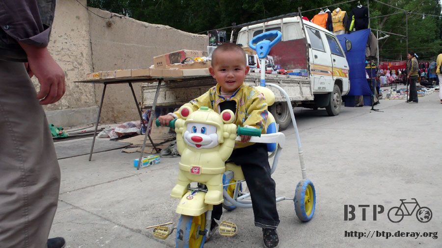
Clothes, hardware and groceries were not what I needed, what interested me always was food.

Here is some deep-fried cake with sugar paste filling – sweet and yummy.

The kid with the deep-fried cake stall surprised me greatly.
“Uncle, are you traveling on bicycle?” he burst out.
Wow, very clever! How did you know? Did I bump into you on the road?
The smart kid saw the tan lines around my fingers to figure out that I was traveling on bike.
“You go, smart kid. One day you will be somebody”

Please take a look! They are some cute Dabancheng girls having long braids and beautiful eyes – super kawaii.
[Note: kawaii is Japanese means cute]
~girls, I am sharing my popcorn with you~

Even though Dabancheng does not grow water melons, it was quite an experience to eat a water melon there.

The watermelon man was a Uyghur, his melons were super cheap.
The most expensive watermelon I ever had was in Xian – 3 RMB for one Chinese pound (or 500 g).
The most inexpensive watermelon was in Dabancheng – 2.5 RMB for one melon (2.5 kg), one sixth of the Xian price.
The watermelons from Turpan have fewer seeds than the melons in Xian.
They are super sweet and have dark green rind with no jagged stripes

He carefully picked a melon of the right size for one person.
I was watching the crowds in the busy market while enjoying the sweet melon.
Some strange looking vegetables were sold at the market,
such as super large purple onions, greenish daikons, purplish daikons, and large green chili peppers which were seen in every dish.
I thought the chili pepper was a bell pepper, so I bit down. Man, it was super hot!

Dinner was braised beef over rice at the restaurant in the market. Chinese food was delicious and was my kind of food.
Moreover, Chinese food and Taiwanese food are quite alike. Even being out in China for more than forty days,
I did not miss Taiwanese food to the degree that I could not sleep but looked forward to some new delicacy every day.

I had a great time in Dabancheng today, eating good food and seeing beautiful scenery.
Tomorrow morning I would manage to get up early and be off to Urumqi before the wind started picking up.